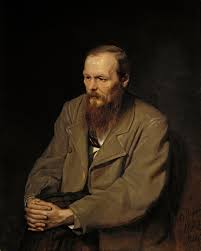
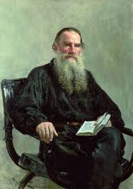
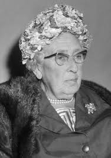
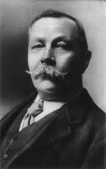
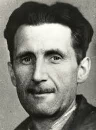
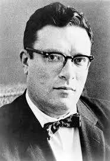
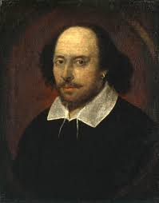

Autori:
Ivo Andrić
Travnik, 1892. g.
Dobitnik Nobelove nagrade koji je majstorski opisao bosansku historiju, sudbine naroda i prolaznost vremena kroz svoje čuvene hronike o mostovima i ljudima.
Fjodor Dostojevski
Moskva, 1821. g.
Genije ruskog realizma koji je istraživao najdublje ponore ljudske psihe, morala i religije, ostavljajući neizbrisiv trag na modernu psihologiju u književnosti.

Lav Tolstoj
Yasna Poljana, 1828. g.
Grof i književni gigant poznat po epskim opisima ruskog društva. Njegovi romani istražuju teme porodice, rata i dubokog duhovnog vaskrsenja pojedinca.

Agatha Christie
Torquay, 1890. g.
Legendarna "kraljica krimića" koja je svijetu podarila Herculea Poirota i Jane Marple. Njene zagonetke su i danas najprodavanija djela detektivskog žanra na svijetu.

Arthur Conan Doyle
Edinburgh, 1859. g.
Ljekar i pisac koji je stvorio Sherlocka Holmesa, najpoznatijeg detektiva u historiji, uvodeći metodu stroge dedukcije u svijet kriminalističke fantastike.

George Orwell
Motihari, 1903. g.
Britanski vizionar koji je kroz svoje kultne distopijske romane upozorio čovječanstvo na opasnosti totalitarizma, masovnog nadzora i manipulacije istinom.

Isaac Asimov
Petroviči, 1920. g.
Jedan od očeva naučne fantastike koji je definisao zakone robotike i kroz serijal o Fondaciji osmislio fascinantnu budućnost i sudbinu galaktičkog carstva.

William Shakespeare:
Stratford-upon-Avon, 1564. g.
Najveći dramatičar svih vremena čije drame o ljubavi, izdaji i ambiciji i nakon četiri vijeka čine nezaobilazan temelj svjetske pozorišne umjetnosti.
